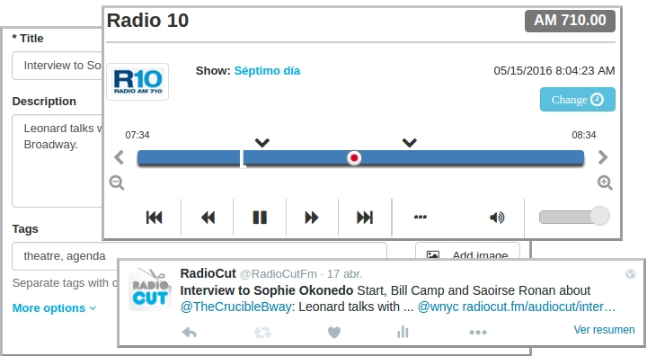
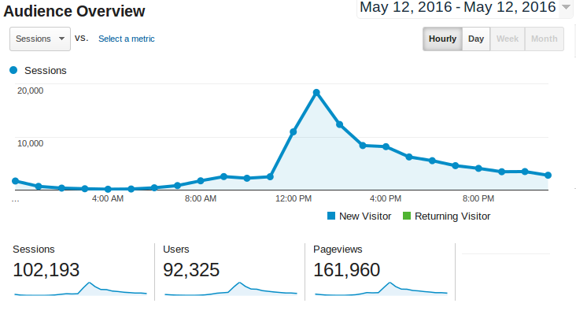
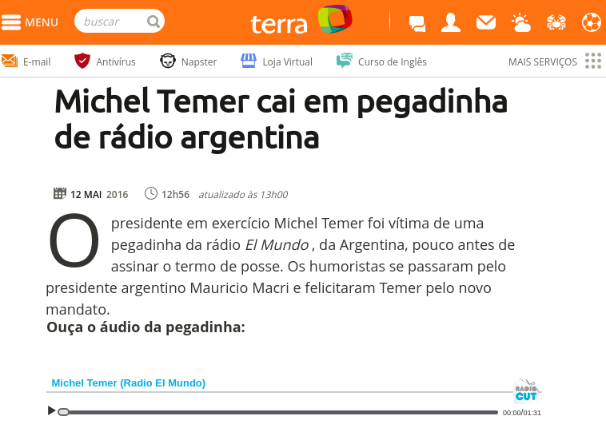
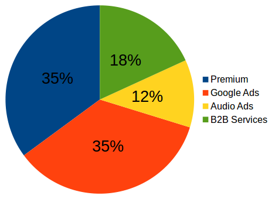
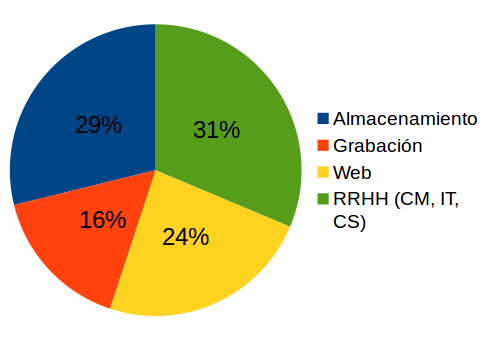

WHERE RADIO GOES VIRAL
Problema
La audiencia de la radio sigue siendo muy grande y sus contenidos están vigentes, pero no la forma en que se distribuyen
?
¿Cómo compartir un segmento de radio?
Consumo on-demand
Descubrimiento social
No indexable
Otras soluciones
Sitios webs de radiosDifícil de administrar. Mala UX |
PodcastsOtros contenidos. No es en tiempo real. |
Difícil de descubrir
1.0: Productores → Consumidores
RADIOCUT
Permite escuchar programas de radio de hace horas, días o meses. También permite crear recortes y compartirlos donde quieras.
Recortar y compartir con RadioCut - Un ejemplo real
|  |  |
Métricas
Usuarios
|
Recortes
|
Radios
|
31 minutos de tiempo promedio
Premio Éter / Menciones en prensa / Futuro de la radio
Ingresos |
Gastos |
Grabación de bajo costo (u$s 20 x radio x año), eficiente y escalable
+43% ganancia operativa / -16% con costos de desarrollo
Próximos pasos
App Mobile |
Mayores Ingresos |
Expansión internacional |